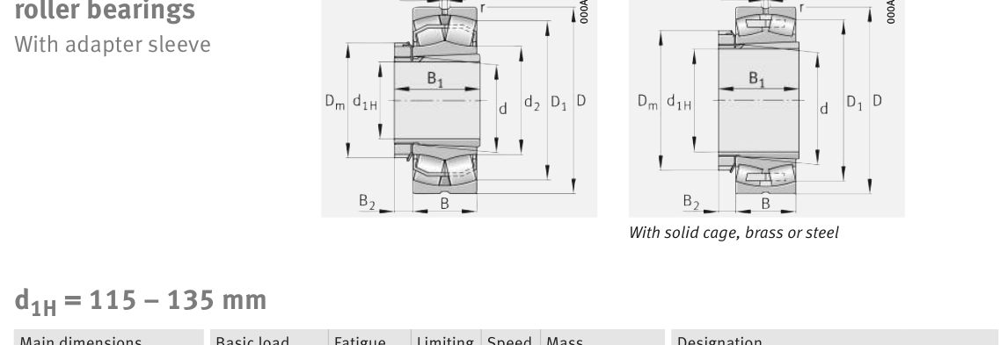

Original catalogue drawing - FAG Schaeffler HR 1, page 760

Scanned from the manufacturer catalogue page listing this part number. All part numbers printed on that table share the same drawing.
Scale cross-section
Blue = inner / outer ring, yellow = rolling element. Drawn to scale from this part's own
dimensions for selection reference only - not a manufacturing or assembly drawing.
Dimension table (mm / inch)
Symbol
Dimension
mm
inch
d
Bore diameter
150
5.9055
D
Outside diameter
250
9.8425
B
Inner-ring / bearing width
80
3.1496
r
Chamfer (min)
2.1
0.0827
Notes
Weights are given in kg. Load ratings are shown in both the original catalogue units and the converted value (1 N = 0.2248 lbf). Data is provided for selection reference only - confirm against the latest official catalogue before ordering.
Main dimensions
Bore d (mm)
150
Outside dia. D (mm)
250
Width B (mm)
80
Inner-ring shoulder dia. D1 (mm)
220.8
Load ratings & speeds
Basic dynamic load rating Cr (lbs)
224809
Basic static load rating Cor (lbs)
298996
Basic dynamic load rating Cr (N)
1e+06
Basic static load rating C0r (N)
1.33e+06
Fatigue limit load Cur (N)
141000
Factor e
0.29
Factor Y0
2.26
Limiting speed nG (rpm)
2,650
Reference speed nB (rpm)
1,720
Weight
Weight (kg)
15.8
Mounting dimensions (fillets / shoulders)
Housing fillet r max (mm)
2.1
Shaft shoulder da (mm)
162
Shaft shoulder db (mm)
160
Housing shoulder Da (mm)
238
Housing fillet ra max (mm)
2.1
Bearing life (ISO 281 basic rating life)
C / P
Equivalent load P (N)
L10 (106 rev)
L10h at 800 rpm
4
250,000
102
2,117
6
166,667
392
8,177
8
125,000
1,024
21,333
10
100,000
2,154
44,884
15
66,667
8,323
173,406
Basic rating life per ISO 281: L10 = (C/P)10/3 with C = 1,000,000 N. Hours = L10 x 106 / (60n). Life-modification factors for lubrication, contamination and temperature (aISO) are not included.
Source & traceability
Brand
FAG
Source catalogue
FAG / Schaeffler Rolling Bearings HR 1
Catalogue page
p.760 (dimensions)
Load ratings in newtons, fatigue limit load Cur, limiting speed nG and reference speed nB.
Send us the quantity you need and we will come back with price and
lead time, normally within 24 hours. Equivalent parts from other brands can be quoted at the same time.